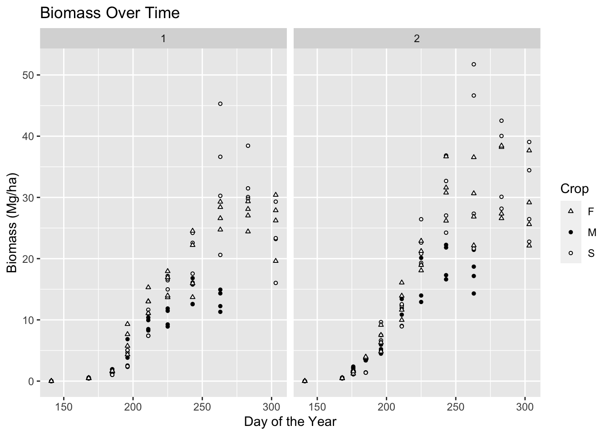
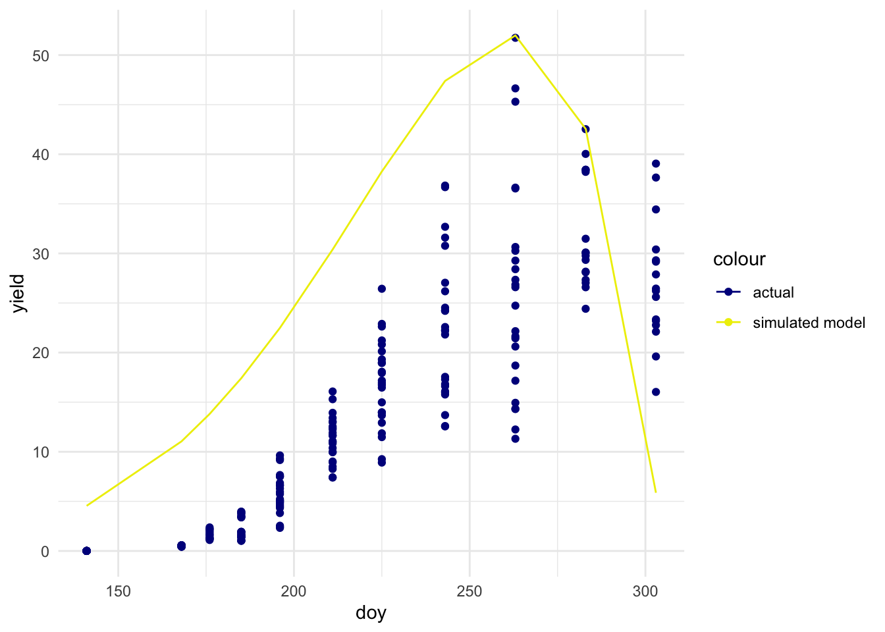

Farmers need to understand the biology of plants and their responses to fertilizers to maximize yield. You will help farmers make predictions on their yields by running non-linear least squares on experimental growth data for three grains in Greece. Additionally, you will assess the response of the grains to fertlizer. You will recreate the model examples of Archontoulis, S.V. and Miguez, F.E. (2015).
The data used by them and soon by you can accessed by installing the nlraa package and then using library(nlraa). The data is stored in an object called sm.
## Visualizing biomass over time detect guess parametersggplot(crop_df, aes(x = doy, y = yield, shape = crop, fill = crop)) +geom_point(size =1) +labs(x ="Day of the Year", y ="Biomass (Mg/ha)", title ="Biomass Over Time") +facet_wrap(~ input, scales ="free_x", ncol =2) +scale_shape_manual(values =c("F"=24, "M"=21, "S"=21)) +scale_fill_manual(values =c("F"="white", "M"="black", "S"="white")) +guides(shape =guide_legend(title ="Crop", override.aes =list(fill =c("white", "black", "white"))),fill =FALSE)
Warning: The `<scale>` argument of `guides()` cannot be `FALSE`. Use "none" instead as
of ggplot2 3.3.4.

Model selection
We choose the Beta function from Table 1 Equation 2.5 of Archontoulis and Miguez (2015) as our model for NLS regression. The function is given as:
ymax1 + t * exp(-t) * (t / tm)^te * exp(-t / tm)
ymax1 represents the maximum yield,
t represents time (day of the year),
te represents the time to inflection,
tm represents the time to reach half of the maximum value.
Write a function in R to model the Beta Function. Create a plot similar to Fig. 4 (biomass over time) and use the definitions of the different parameters to find some potential starting parameter values for your nls analysis.
## Setting up the Beta Function for the modelbeta_function <-function(t, ymax, te, tm) { y_out <- ymax*(1+(te-t)/(te-tm))*(t/te)^(te/(te-tm))return(y_out)}## Testing initial simulation values based on literature and plotting visualizationsbeta_simulation <- crop_df %>%mutate(simulated =beta_function(doy, 52, 262, 219))simulated_mod_plot <-ggplot(beta_simulation, aes(x = doy, y = yield, color ="actual")) +geom_point() +geom_line(aes(x = doy, y = simulated, color ="simulated model")) +scale_color_manual(values =c("actual"="darkblue", "simulated model"="yellow2")) +theme_minimal()simulated_mod_plot

Pre NLS Modelling Setup
## Filtering to keep observations from sorghum fields with higher inputs.sorghum_df <- crop_df %>%filter(crop =="S"& input =="2")## Setting up initial guessesymax_guess <-max(crop_df$yield)te_guess <-262tm_guess <-219
First NLS Model
Filter to keep observations from the sorghum fields with high inputs and run an NLS model to predict yield for any given day of the year.
11416.45 (2.66e+00): par = (51.73975 262 219)
2077.507 (6.36e-01): par = (35.81603 274.4062 235.1632)
1505.483 (8.64e-02): par = (39.41181 282.0513 245.826)
1495.210 (1.36e-02): par = (39.71855 281.5835 244.5734)
1495.015 (4.03e-03): par = (39.84876 281.5863 244.8366)
1494.998 (1.16e-03): par = (39.81182 281.5859 244.7599)
1494.996 (3.35e-04): par = (39.82284 281.5863 244.7822)
1494.996 (9.67e-05): par = (39.81969 281.5862 244.7758)
1494.996 (2.80e-05): par = (39.8206 281.5863 244.7776)
1494.996 (8.08e-06): par = (39.82034 281.5863 244.7771)
kbl(coef(summary(nls_sorghum_one)))
Table 1: Parameter value estimates, standard errors, t-values and p-values for the NLS model fitted to high-input sweet sorghum biomass data.
Estimate
Std. Error
t value
Pr(>|t|)
ymax
39.82034
2.248857
17.70692
0
te
281.58626
2.080770
135.32790
0
tm
244.77710
3.511970
69.69795
0
In your final report include the code, but NOT the plot you used to feed guesses. Make a good looking table showing the selected parameter values, standard errors, and p-values of the estimated parameters. Graph the fitted model on top of the maize data. Run NLS models for all 24 combinations of plot, input level, and crop type using purrr. For each species, which model had the lowest RMSE? Show a table of the RMSE and chosen parameter values of the best fitted models for each species. Finally, filter to plot 1 and recreate Figure 7 of the paper. Don’t worry about adding confidence intervals on the data points. How does more fertilizer impact yield for all three grains? Hints: I would separate dataframes one of the filtered data and another of the model predictions with a vector of days from 141 to 306. Then create two figures for each input and join them with patchwork or cowplot. Filter observations of predicted yield for maize when day of year is less than 263. Otherwise your graph is going to look weird. Include an overview section with subsections that briefly summarize the dataset (this should include a well formatted data citation), the purpose of your analysis, and a pseudocode outline of the steps of your analysis. Your writeup should look and feel professional in style, tone, and substance. Optional: Consider including a photo or image that is relevant to your analysis. Consider applying a Bootswatch theme to your document (theme: themename in the Quarto document header) All code, including attached packages, should be included using code-folding. Make sure to suppress any messages & warnings. Set embed-resources to be true so your HTML is self-contained!